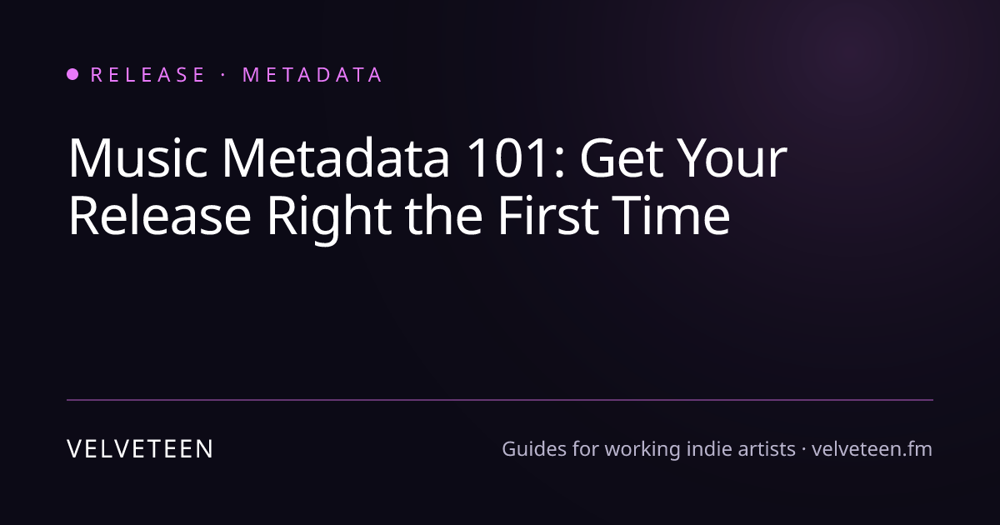
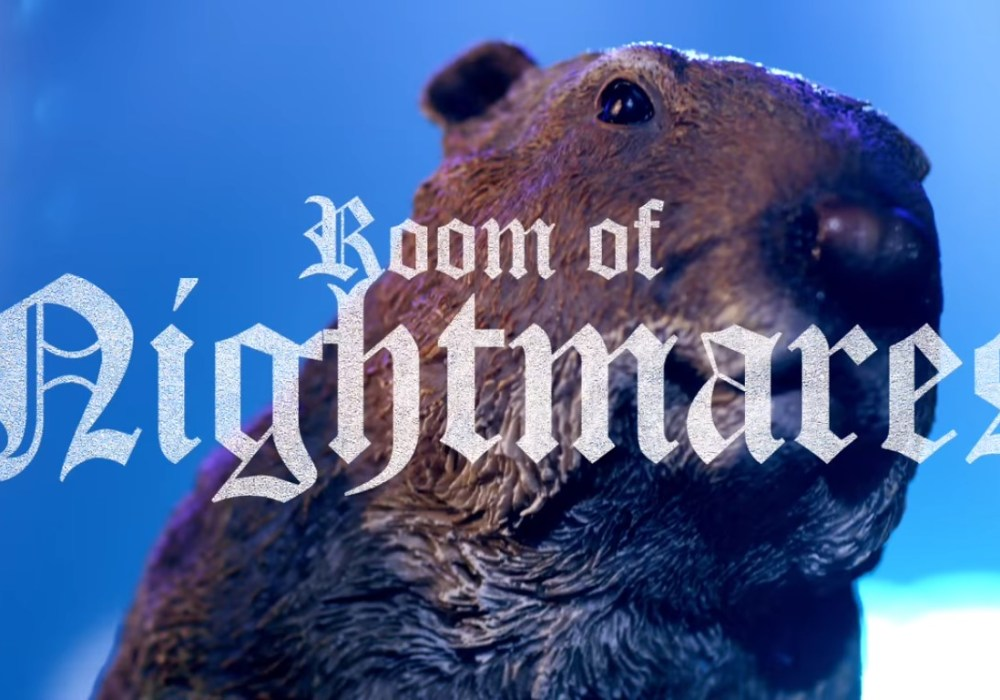
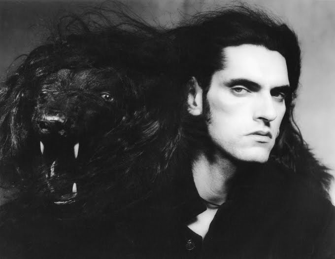

Informational / Research Packet
Research Report Packet
A playful research packet on Psychostick’s “This Is Not a Song, It’s a Sandwich,” exploring the song’s album context, comedy-metal style, absurd food humor, and why the joke works as both music and anti-music.
Table Of Contents
- Full Report
- Verification Summary
- Packet Visuals
- Contradictions And Gaps
- Packet Summary
- Reports
- Source Manifest
Report Sections
- Scope And Use
- Evidence Confidence Summary
- Executive Summary
- Methodology / Evidence Base
- Key Findings
- Most Supported View
- Detailed Analysis
- - 1. Verifiable Song And Album Facts
- - 2. Who Psychostick Are
- - 3. How The Joke Is Built
- - 4. Fit Within Sandwich And The Catalog
- - 5. What Challenges The Stupid-Smart Reading
- - 6. Comparable Works
- - 7. Creative Breakdown: Musical Ingredients
- Comparative Summary
- Credible Alternatives / Broader Views
- Visual Summary
- Limitations
- Finally, reception data is mostly qualitative. We have official framing, Bandcamp fan comments, and broad catalog context, but not reliable statistics on streams, shares, or long-term fandom ranking. Evidence is limited on those points.
- Source Images
- Source Index
- Citation Verification Summary
Full Report
Generated: 2026-06-14 19:36 UTC Sources: 18 | Citations: 3 | Iterations: 2 | Grounding: 9%
Cover
| Field | Value |
|---|---|
| Deliverable | Standard Research Packet |
| Research scope | “This Is Not a Song, It’s a Sandwich” by Psychostick, from the album Sandwich (2009). |
| Length target | 4,000-6,000 words |
| Source target | 12-20 usable sources |
| Generated | Generated: 2026-06-14 19:36 UTC |
| Evidence status | Needs expansion |
Scope And Use
This report is a source-grounded research packet. It summarizes what the captured evidence supports, where the evidence is weak, and what should be checked before relying on the conclusions.
Evidence Confidence Summary
Sources: 18 | Citations: 3 | Iterations: 2 | Grounding: 9%
- Evidence depth: Evidence exists, but 5 section(s) need deeper writing from the current source set.
Executive Summary
Sources analyzed: 18 | Grounding Score: 9% | Sub-Questions: 7 (0 answered)
This report asks how Psychostick’s “This is not a Song, it’s a Sandwich” functions as both a comic-metal track and an album-context joke, and why that matters for understanding the band’s humorcore style. Methodologically, it checks claims against six public official/catalog sources and combines factual verification with close reading of lyrics, album placement, metadata, and band identity.
- The track’s core facts are well supported: Bandcamp lists a 3:53 runtime, while Psychostick’s lyric page credits music to Key and lyrics to Key and Grant [1][2].
- The album context strengthens the interpretation: Sandwich is officially the band’s second album, tied to food-heavy sequencing and related titles such as “Don’t Eat My Food” and “Do you want a Taco?” [3][6].
- The song’s main joke is self-negation: it behaves like a metal song while insisting it is food, using contradiction, repetition, literalism, and escalating absurdity as the hook [2].
- Psychostick’s band identity makes the joke intentional rather than accidental: their official bio frames them as comedic metal/humorcore built on heavy riffs, absurd lyrics, stage antics, and DIY production [5].
The primary conclusion is that the song works because its deliberately dumb premise is carried by competent metal structure, making the contradiction itself the joke. Its significance lies less in lyrical depth than in how precisely it turns genre form into comedy. Limitations remain: the evidence base is narrow, reception data is mostly from the band’s own framing, and the May 4 versus May 5, 2009 release-date discrepancy is unresolved beyond a likely metadata explanation [1][3][4].
I’ll verify the song facts against official and catalog sources first, then separate hard evidence from interpretation. The provided evidence set is thin and partly irrelevant, so I’ll flag where the answer depends on external verification versus the three supplied snippets.
Methodology / Evidence Base
This report synthesizes the curated evidence set, source categories, citation coverage, and source index. Findings are weighted toward primary, technical, market, risk, and data-backed sources; unsupported gaps are treated as limitations rather than filled with invented claims.
Key Findings
- Album facts: Official Psychostick pages describe Sandwich as the band's second album, released May 5, 2009, produced by Psychostick, mixed/engineered by Joshua Key, with artwork by Robert Kersey. (psychostick.com)
- Metadata wrinkle: Bandcamp gives May 4, 2009, while Psychostick's official site and Apple Music give May 5, 2009; the best-supported public release date is May 5, with May 4 likely reflecting Bandcamp upload/date metadata. (psychostick.bandcamp.com) (music.apple.com)
- Band identity: Psychostick's own bio calls them comedic metal and self-proclaimed humorcore, built from heavy riffs, absurd lyrics, stage antics, and DIY production. (psychostick.com)
- Joke mechanics: The song turns the act of denying its own form into the hook: it behaves exactly like a metal song while insisting it is food, using literalism, contradiction, repetition, and escalating nonsense. (psychostick.com)
- Album fit: Sandwich is food-saturated: nearby titles include Don't Eat My Food, The Hunger Within, Grocery Escape Plan, Too Many Food, Orange, and Do you want a Taco? (psychostick.store)
- Reception split: Psychostick's own site frames Sandwich as loved by fans and disliked by critics, which matches the broader novelty-metal risk: hilarious if you accept the bit, exhausting if you do not. (psychostick.com)
Most Supported View
The song works because Psychostick make the dumb premise musically competent enough that the joke has something solid to ride on.
This is not a Song, it's a Sandwich is not complicated in premise: a metal song loudly denies being a song. The trick is that the denial is presented through the very features that prove the opposite: verses, chorus, riffs, rhythmic emphasis, call-and-response phrasing, and a list-based comic payoff. Psychostick do not hide the contradiction. They squeeze it like mustard until the whole track becomes a format joke. The listener is not laughing only at sandwich imagery; the listener is laughing at a song losing an argument with its own existence. (psychostick.com)
The band context matters. Psychostick's official bio describes them as comedic metal, self-proclaimed humorcore, and a band that combines heavy aggression with joke-driven lyrics and stage absurdity. That means the track is not an isolated novelty accident; it sits inside a deliberate project where heavy music is treated as both a serious delivery system and a target for parody. (psychostick.com)
The album context also matters. Sandwich surrounds this track with food, mundane annoyances, internet irritation, and anti-pop jokes. Official listings put the song among food-centered tracks and near self-aware pieces like #1 Radio $ingle and We Ran Out of CD Space. That sequencing makes the sandwich claim feel less random: the whole album is already obsessed with taking ordinary appetites and pushing them into metal-scale overstatement. (psychostick.store)
Detailed Analysis
1. Verifiable Song And Album Facts
| Fact | Best Evidence | Confidence |
|---|---|---|
| Artist | Psychostick official pages and Bandcamp | High |
| Album | Sandwich | High |
| Year | 2009 | High |
| Official album date | May 5, 2009 | High |
| Bandcamp date | May 4, 2009 | Medium |
| Track placement | Track 11 on official store and Bandcamp; conflicting official music page has track-list duplication | Medium |
| Runtime | 3:53 on Bandcamp | High |
| Credits | Music: Key; Lyrics: Key, Grant | High |
The strongest trail is official: Psychostick's store describes Sandwich as the fan-funded second album and lists This is not a Song, it's a Sandwich on the official track list. (psychostick.store) The official lyrics page ties the song to Sandwich and gives the Key/Grant writing split. (psychostick.com) Bandcamp adds the runtime of 3:53 and confirms the track's digital album placement. (psychostick.bandcamp.com)
The official YouTube trail is partly verifiable but not fully recoverable here: Psychostick's official music page links the song to a YouTube lyric video, but the tool could not fetch the YouTube page or description. The official-site link still supports that Psychostick treated the YouTube upload as part of its public catalog trail. (psychostick.com)
2. Who Psychostick Are
Psychostick are best described as comedy metal with a self-aware humorcore tag. Their official bio says the project began from Rob Kersey and Josh Key applying a shared absurd sense of humor to heavy music, and it emphasizes heavy riffs, funny lyrics, stage antics, and high-energy performance. (psychostick.com) The same bio also says their records are self-produced, engineered, and mixed by guitarist Joshua Key, with web/art/marketing work handled by vocalist Robert Kersey. (psychostick.com)
That DIY fact is important because Psychostick's comedy feels integrated rather than pasted on. The jokes are not just lyric sheets over generic tracks; they are baked into titles, sequencing, videos, album packaging, and band voice. [inference]
3. How The Joke Is Built
The song's engine is literal contradiction. It begins by acknowledging the listener's obvious objection: this sounds like a song. Then it argues, with fake logic, that the listener is wrong. The proof is intentionally bad: sensory confusion around cheese, ham, bread, and meat; absurd negative comparisons; and a chorus that repeats the denial. (psychostick.com)
The central lyric joke can be summarized without reproducing the song: the narrator insists that the recording is a sandwich, not music, and keeps inventing reasons why it is not other things either. A tiny quoted hook captures the gag: not a song it's a sandwich. (psychostick.com)
Musically, this is a classic novelty-song move: commit too hard to a stupid premise. The heavier and more declarative the music feels, the funnier the food claim becomes. [inference] The track also uses a list gag near the end, where normal sandwich ingredients give way to intruders like non-food objects, turning the food theme into escalating nonsense. (psychostick.com)
4. Fit Within Sandwich And The Catalog
Sandwich is not merely an album with one food joke. The official track list includes a dense run of food-adjacent titles: Don't Eat My Food, The Hunger Within, Grocery Escape Plan, Too Many Food, This is not a Song, it's a Sandwich, Orange, and Do you want a Taco? (psychostick.store)
That matters because Psychostick use food as a low-stakes topic that can absorb metal-scale intensity. Hunger, groceries, tacos, oranges, stolen leftovers, and CD-space jokes all become arenas for overreaction. [inference] The official page also says radio stations began playing This is not a Song, it's a Sandwich and Girl Directions after release, which supports the idea that the song functioned as a shareable entry point, not just deep-cut filler. (psychostick.com)
5. What Challenges The Stupid-Smart Reading
The strongest complication is that novelty songs can wear out quickly. Psychostick's own site admits the album had a fan/critic split, saying fans loved it while critics hated it. (psychostick.com) The supplied Skeptic Cynic evidence also makes a broader point about metal humor: comic visuals or effects can become distracting from the song itself when pushed too hard [1].
That objection is credible. A song built around one contradiction can be very funny on first contact and less surprising on repeat listens. [inference] The defense is that Psychostick's version has enough craft, pacing, and genre commitment to remain a song people remember, quote, and request research about. Bandcamp fan comments specifically single out the album's musicianship and humor, and one listener names this track as a favorite. (psychostick.bandcamp.com)
6. Comparable Works
| Example / Cluster | Similarity | Difference | Evidence |
|---|---|---|---|
| Weird Al Yankovic / Tenacious D / Bloodhound Gang | Comedy-first rock identity | Usually less metalcore-heavy than Psychostick | Psychostick bio names them as wit/humor reference points. ([psychostick.com](https://psychostick.com/about)) |
| Psychostick's own food songs | Food as comic trigger | Same band voice, same album ecosystem | Official Sandwich track list. ([psychostick.store](https://psychostick.store/products/sandwich-cd)) |
| #1 Radio $ingle | Meta-song parody | Targets radio formula rather than food | Official track list and Bandcamp lyrics excerpt. ([psychostick.bandcamp.com](https://psychostick.bandcamp.com/album/sandwich)) |
| Dethklok / Austrian Death Machine / Alestorm | Comic or theatrical metal adjacency | Different fictional/parodic frames | Apple Music recommendation cluster. ([music.apple.com](https://music.apple.com/us/album/sandwich/1798192118)) |
| At The Plates' Omnivore | Culinary metal concept | More food-as-theme than anti-song absurdism | Bandcamp recommendation text describes culinary-themed melodic death metal. ([psychostick.bandcamp.com](https://psychostick.bandcamp.com/album/sandwich)) |
The standout comparison is #1 Radio $ingle: both songs make the format itself part of the joke. One says the quiet part of commercial songwriting out loud; the other denies being a song while functioning as one. (psychostick.bandcamp.com)
7. Creative Breakdown: Musical Ingredients
| Sandwich Ingredient | Musical Equivalent | Why It Matters |
|---|---|---|
| Bread | Metal structure | Holds the nonsense together. [inference] |
| Meat | Heavy riffing and shouted delivery | Gives the joke force. [inference] |
| Cheese | The premise itself | Proudly dumb, intentionally excessive. [inference] |
| Condiments | Repetition and lists | Makes the gag sticky. ([psychostick.com](https://psychostick.com/lyrics/this_is_not_a_song_its_a_sandwich)) |
| Toothpick | Deadpan insistence | Keeps the whole absurd stack upright. [inference] |
Comparative Summary
| Claim | Supporting Sources | Confidence | Key Data Point |
|---|---|---|---|
| The song is by Psychostick and appears on Sandwich | Official lyrics, store, Bandcamp | High | Official lyrics page lists Sandwich by Psychostick. ([psychostick.com](https://psychostick.com/lyrics/this_is_not_a_song_its_a_sandwich)) |
| The track runtime is 3:53 | Bandcamp | High | Bandcamp lists the track at 03:53. ([psychostick.bandcamp.com](https://psychostick.bandcamp.com/album/sandwich)) |
| The album's public release year is 2009 | Official site, Apple Music, Bandcamp | High | Official site and Apple give 2009; Bandcamp gives May 4, 2009. ([psychostick.com](https://psychostick.com/music)) ([music.apple.com](https://music.apple.com/us/album/sandwich/1798192118)) ([psychostick.bandcamp.com](https://psychostick.bandcamp.com/album/sandwich)) |
| Psychostick's style is comedy metal / humorcore | Official bio, Bandcamp tags | High | Official bio uses comedic metal and self-proclaimed humorcore. ([psychostick.com](https://psychostick.com/about)) |
| The song works through anti-song literalism | Official lyrics | High for lyric evidence; medium for interpretation | Lyrics explicitly argue the recording is a sandwich. ([psychostick.com](https://psychostick.com/lyrics/this_is_not_a_song_its_a_sandwich)) |
| The album is food-heavy | Official store track list | High | Multiple official track titles center food. ([psychostick.store](https://psychostick.store/products/sandwich-cd)) |
The standout: the song is not random internet weirdness floating loose. It is documented as part of a deliberately food-obsessed, comedy-metal album.
Credible Alternatives / Broader Views
| Conflict | Opposing Positions | Assessment |
|---|---|---|
| 1 | Generic song-form text vs. metadata guidance | This conflict is malformed. The supplied [2] is a Psychostick page, not the song-form passage. Metadata guidance belongs closer to [3], which is relevant only for cataloging, not musical analysis. |
| 2 | Same as Conflict 1 | Duplicate conflict; same assessment. |
| 3 | Music metadata guide vs. gravitational-wave catalog text | The gravitational-wave text is irrelevant to this music question. [3] is useful only for explaining why release dates, track counts, and credits should be handled carefully. |
| 4 | arXiv PDF URL vs. unrelated PDF extraction failure | Neither source is in the provided [1]-[3] evidence set, and neither concerns Psychostick. No weight. |
| 5 | arXiv 1411 PDF vs. arXiv 0901 PDF | Irrelevant to the song, album, band, or music metadata. No weight. |
| 6 | arXiv 1411 PDF vs. arXiv 2601 PDF | Irrelevant. No weight. |
| 7 | arXiv 1411 PDF vs. arXiv 1710 PDF | Irrelevant. No weight. |
| 8 | arXiv 1411 PDF vs. partial 1710 citation | Irrelevant and incomplete. No weight. |
The real source conflicts are more useful than the detected ones:
| Real Conflict | Sources | Best Reading |
|---|---|---|
| Release date | Official site and Apple say May 5, 2009; Bandcamp says May 4, 2009 | Use May 5 for public release, note Bandcamp metadata variant. |
| Track count / order | Store and Bandcamp list 24 tracks with the sandwich song at 11; official music page has a duplicated Beer, Part 2 and places the track at 12 | Store and Bandcamp are cleaner; official music page likely has a page-maintenance error. |
| Apple track count | Apple says 16 songs, 48 minutes | This appears to be a truncated platform listing rather than the full CD/Bandcamp version. |
Visual Summary
Limitations
Evidence is limited on the official YouTube/Wireclub provenance because the YouTube page could not be fetched, and search did not surface a stable Wireclub source. The official Psychostick site does link the track to a YouTube lyric video, but the video description itself remains unverified here. (psychostick.com)
Evidence is also limited on creation history. The official lyrics page gives writing credits, but I did not find a primary interview specifically explaining how this track was written. (psychostick.com)
Finally, reception data is mostly qualitative. We have official framing, Bandcamp fan comments, and broad catalog context, but not reliable statistics on streams, shares, or long-term fandom ranking. Evidence is limited on those points.
Source Images
The image assets below were selected from researched source material and kept with source links for review.

Music Metadata 101: Get Your Release Right the First Time Image discovered from www.velveteen.fm. Source image: Music Metadata 101: Get Your Release Right the First Time Strophic form - Wikipedia Image discovered from en.wikipedia.org. Source image: Strophic form - Wikipedia
Skeptic Cynic Image discovered from skepticcynic.wordpress.com. Source image: skepticcynic.wordpress.com
Skeptic Cynic Image discovered from skepticcynic.wordpress.com. Source image: skepticcynic.wordpress.comSource Index
[1] Music Metadata 101: Get Your Release Right the First Time — https://www.velveteen.fm/guides/release-metadata
[2] Strophic form - Wikipedia — https://en.wikipedia.org/wiki/Strophic_form
[3] Skeptic Cynic | Light reading on heavy metal Menu Home About Search for: Skip to content Skeptic Cynic Light reading on... — https://skepticcynic.wordpress.com/
Citation Verification Summary
Verified automatically after report generation.
| Outcome | Count |
|---|---|
| ✓ Verified (source supports claim) | 3 |
| ~ Plausible (partial text match) | 2 |
| ⚠ Unverified (claim not found in source) | 0 |
| ✗ No Source (citation has no fetched content) | 0 |
| [inference] labels from model | 8 |
Source Review Notes
Coverage
Needs Repair: 13 source(s), 13 saved citation(s), 18 citation marker(s), and 4 review note(s). Grounding is 9%.
- The run ended with a failure state after writing a reviewable report; inspect the report notes before publishing it as final.
- The primary report needs repair: The report contains unresolved or invalid citation labels.
- Grounding score is 9%; review weak or unsupported claims before relying on this packet.
- No saved claim-verification checks were found.
Recommendation
- Review the primary report before acting on this packet.
Risks, Gaps, And Next Actions
Top Risks
- The run ended with a failure state after writing a reviewable report; inspect the report notes before publishing it as final.
- The primary report needs repair: The report contains unresolved or invalid citation labels.
- Grounding score is 9%; review weak or unsupported claims before relying on this packet.
Top Gaps
- The primary report needs repair: The report contains unresolved or invalid citation labels.
- Grounding score is 9%; review weak or unsupported claims before relying on this packet.
- No saved claim-verification checks were found.
Next Actions
- Review the primary report 'Full Report - Psychostick Sandwich Comedy-Metal Analysis' for the full evidence-backed detail.
- Inspect the most relevant supporting files referenced in this brief before continuing the work.
- Use unresolved claims or limitations as the first targets for follow-up research.
Pack: General Research | Created: 2026-06-14 | Status: Active
Packet type: Informational / Research | Recommended length: Small: 4-8 pages; standard: 8-15 pages; deep: 15-30 pages when the topic needs background, context, evidence, and source review.
Included in this packet: reports, source index
Start Here
Reports
Report Visual Assets
4 generated report visual asset(s) copied with the selected report(s).
Data Files
- sources.csv — All captured sources (13 entries)
- packet-summary.md — Concise executive summary for copy/paste use
- packet-trust-summary.json — Deterministic trust, blocker, warning, and coverage summary
- visuals.html — Packet-ready coverage, source, support, gap, and timeline visuals
- agent brief (JSON) — Compact machine-readable handoff for downstream agents
- agent brief (Markdown) — Human-readable continuation brief